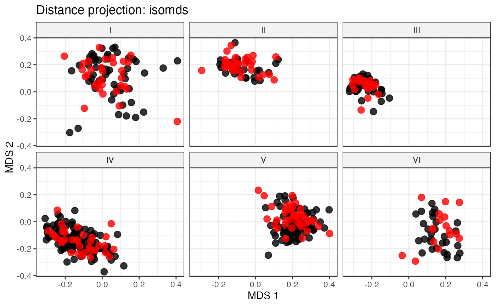

Selection of Entries from Clusters/Groups by Random Sampling
Source:R/select.random.R
select.random.RdSelect entries from cluster/groups in the entire collection by random sampling according to allocation specified.
Arguments
- data
The data as a data frame object. The data frame should possess one row per individual and columns with the individual names and multiple trait/character data.
- names
Name of column with the accession names as a character string.
- group
Name of column with the accession group/cluster names as a character string.
- alloc
A named numeric vector specifying the number of entries to be selected. Names should correspond to the levels of the "
"group"column, and values indicate the number of elements to be selected from each level.- always.selected
Names of accessions to be always included in the core set as a character vector.
Details
For each cluster/group entries are selected randomly according to the
allocation provided
(Brown 1989; Brown and van Hintum 2000)
. Entries listed
as always.selected are mandatorily included in the selection. Warnings
are issued if requested allocation is smaller than the number of
always-selected entries in a cluster/group and/or when the cluster/group does
not contain enough remaining entries to fulfill the allocation.
References
Brown AHD (1989).
“Core collections: A practical approach to genetic resources management.”
Genome, 31(2), 818–824.
Brown AHD, van Hintum TJL (2000).
Core Collections of Plant Genetic Resources.
Bioversity International.
ISBN 92-9043-454-6.
Examples
library(cluster)
# Get data
data(cassava_EC_gp)
set.seed(123)
cassava_EC_gp <- cassava_EC_gp[sample(1:nrow(cassava_EC_gp), 500), ]
data <- cbind(genotypes = rownames(cassava_EC_gp), cassava_EC_gp)
row.names(data) <- NULL
# Prepare inputs
counts <- c(I = 31, II = 31, III = 18, IV = 35, V = 40, VI = 17)
mand_accns <-
c("TMe-2018", "TMe-801", "TMe-3191", "TMe-1830", "TMe-1790")
# Specify the seed
set.seed(123)
# Fetch selected accessions
sel_random_out <-
select.random(data = data, names = "genotypes",
group = "Cluster", alloc = counts,
always.selected = mand_accns)
sel_random_out
#> $I
#> [1] "TMe-1830" "TMe-2453" "TMe-882" "TMe-3419" "TMe-1914" "TMe-3514"
#> [7] "TMe-28" "TMe-2967" "TMe-1589" "TMe-3111" "TMe-3623" "TMe-3553"
#> [13] "TMe-3104" "TMe-469" "TMe-3112" "TMe-865" "TMe-1581" "TMe-300"
#> [19] "TMe-2785" "TMe-3694" "TMe-3437" "TMe-1451" "TMe-2944" "TMe-2152"
#> [25] "TMe-1218" "TMe-1091" "TMe-2513" "TMe-3132" "TMe-500" "TMe-3465"
#> [31] "TMe-1960"
#>
#> $II
#> [1] "TMe-3258" "TMe-339" "TMe-3200" "TMe-3366" "TMe-2211" "TMe-3093"
#> [7] "TMe-3557" "TMe-2611" "TMe-2952" "TMe-2951" "TMe-2995" "TMe-2997"
#> [13] "TMe-796" "TMe-2329" "TMe-3284" "TMe-2257" "TMe-3447" "TMe-251"
#> [19] "TMe-3495" "TMe-74" "TMe-1474" "TMe-1754" "TMe-3766" "TMe-3530"
#> [25] "TMe-196" "TMe-1831" "TMe-171" "TMe-960" "TMe-455" "TMe-3239"
#> [31] "TMe-2021"
#>
#> $III
#> [1] "TMe-1790" "TMe-3100" "TMe-425" "TMe-261" "TMe-161" "TMe-2502"
#> [7] "TMe-3644" "TMe-1738" "TMe-123" "TMe-1198" "TMe-2733" "TMe-2748"
#> [13] "TMe-3620" "TMe-14" "TMe-3148" "TMe-1819" "TMe-3407" "TMe-3336"
#>
#> $IV
#> [1] "TMe-801" "TMe-3191" "TMe-78" "TMe-2039" "TMe-3581" "TMe-108"
#> [7] "TMe-266" "TMe-3538" "TMe-3781" "TMe-2788" "TMe-259" "TMe-3218"
#> [13] "TMe-3257" "TMe-2567" "TMe-3198" "TMe-1377" "TMe-2947" "TMe-2924"
#> [19] "TMe-3068" "TMe-27" "TMe-1330" "TMe-1179" "TMe-3072" "TMe-875"
#> [25] "TMe-2971" "TMe-956" "TMe-460" "TMe-2247" "TMe-3327" "TMe-2240"
#> [31] "TMe-428" "TMe-1776" "TMe-699" "TMe-1167" "TMe-1700"
#>
#> $V
#> [1] "TMe-2018" "TMe-256" "TMe-723" "TMe-1694" "TMe-651" "TMe-2016"
#> [7] "TMe-769" "TMe-997" "TMe-585" "TMe-2124" "TMe-803" "TMe-247"
#> [13] "TMe-1131" "TMe-755" "TMe-439" "TMe-423" "TMe-1440" "TMe-645"
#> [19] "TMe-627" "TMe-1414" "TMe-1273" "TMe-2590" "TMe-2753" "TMe-1220"
#> [25] "TMe-419" "TMe-1295" "TMe-1934" "TMe-603" "TMe-1559" "TMe-1188"
#> [31] "TMe-1037" "TMe-574" "TMe-870" "TMe-1760" "TMe-2425" "TMe-363"
#> [37] "TMe-600" "TMe-167" "TMe-863" "TMe-2355"
#>
#> $VI
#> [1] "TMe-2791" "TMe-1076" "TMe-2818" "TMe-1403" "TMe-1503" "TMe-222"
#> [7] "TMe-505" "TMe-936" "TMe-751" "TMe-1608" "TMe-631" "TMe-2543"
#> [13] "TMe-1676" "TMe-1413" "TMe-1302" "TMe-1566" "TMe-693"
#>
# Get distance matrix - Only for visualization
quant <- c("NMSR", "TTRN", "TFWSR", "TTRW", "TFWSS", "TTSW", "TTPW",
"AVPW", "ARSR", "SRDM")
qual <- c("CUAL", "LNGS", "PTLC", "DSTA", "LFRT", "LBTEF", "CBTR", "NMLB",
"ANGB", "CUAL9M", "LVC9M", "TNPR9M", "PL9M", "STRP", "STRC",
"PSTR")
# Convert qualitative data columns to factor
cassava_EC_gp[, qual] <- lapply(cassava_EC_gp[, qual], as.factor)
# Standardise quantitative data column
cassava_EC_gp[, quant] <- lapply(cassava_EC_gp[, quant], function(x) {
scale(x)[, 1]
})
gp_vec <- setNames(as.character(data[, "Cluster"]), data[, "genotypes"])
# Get the Gower's distance matrix
dist_matrix <- daisy(x = cassava_EC_gp[, c(qual, quant)],
metric = "gower")
plot_dist(d = dist_matrix, method = "isomds",
gp = gp_vec,
highlight = unlist(sel_random_out, use.names = FALSE))
